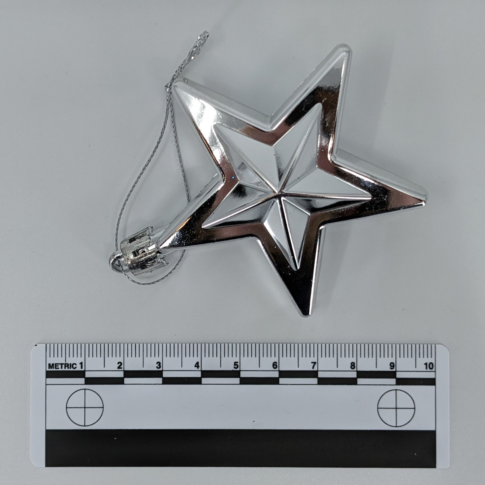
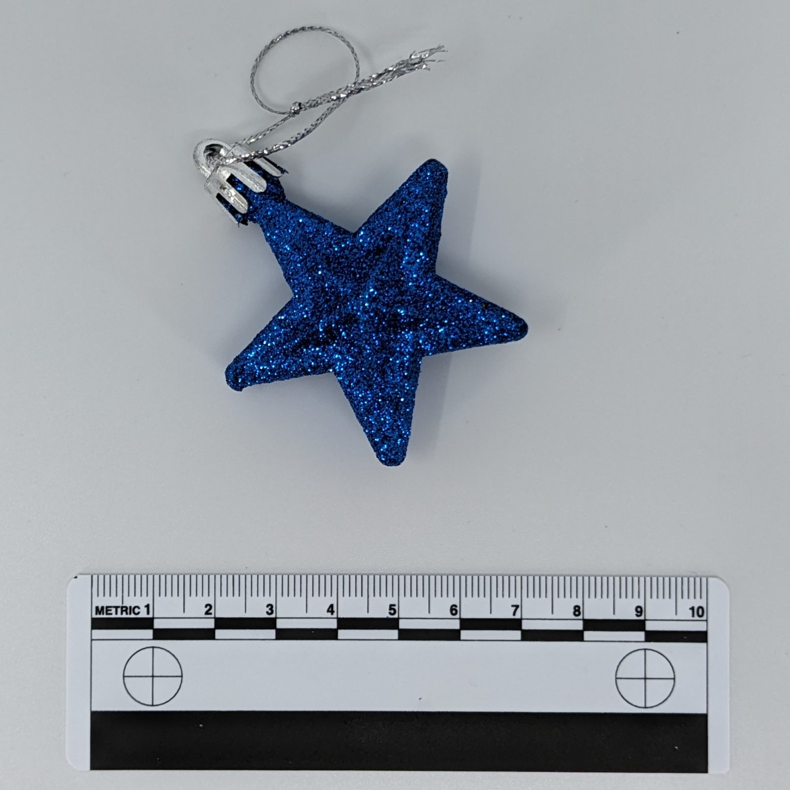
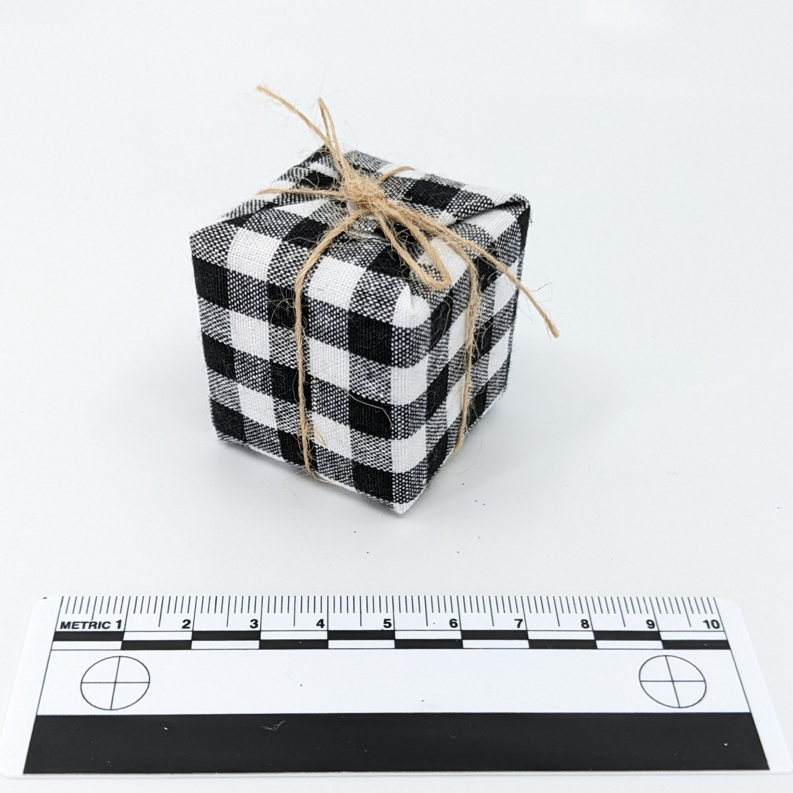

Human skull model for capturing cavities and crevices

Fuzzy dice for capturing fuzzy texture

Ornaments (silver and blue) for capturing multiple colors and shine

Ornaments (silver and blue) for capturing multiple colors and shine

Christmas box ornaments (gold and black/white) for capturing shine,
cloth,
and string

Christmas box ornaments (gold and black/white) for capturing shine,
cloth,
and string

Chess piece for capturing frosted glass